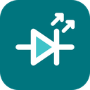
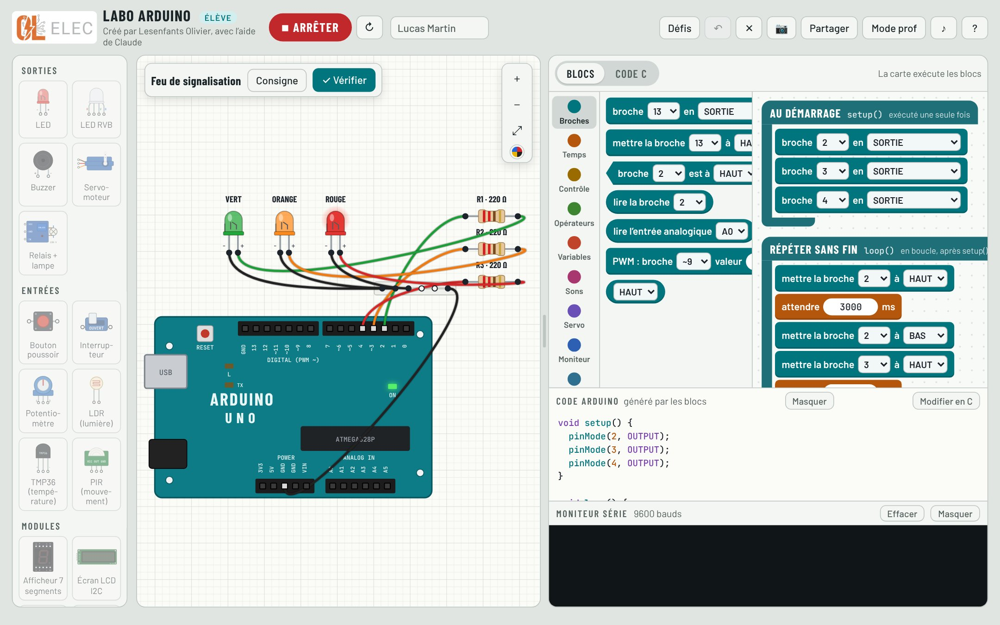
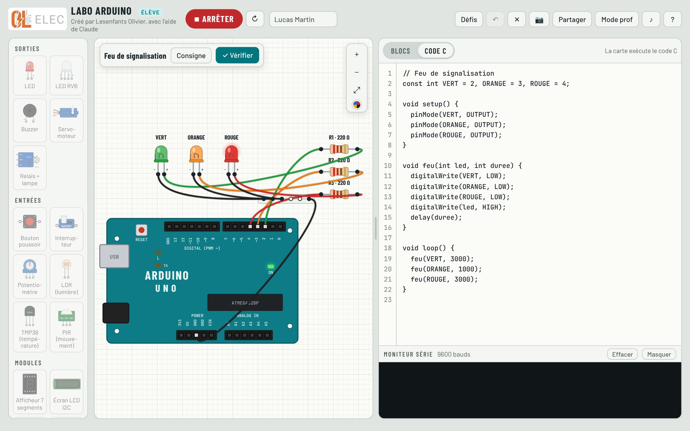
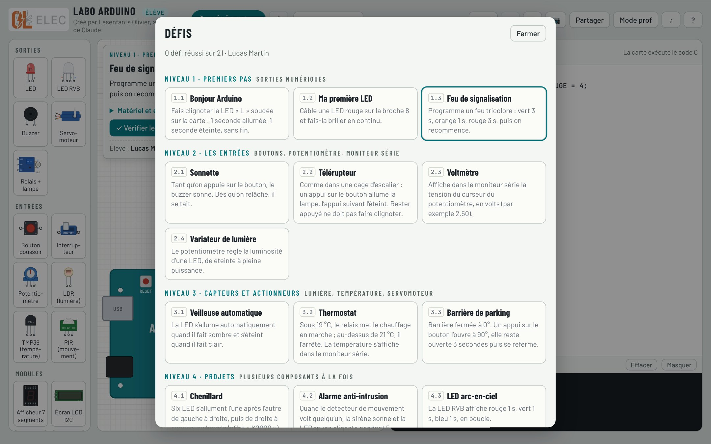

L’Arduino en classe, sans griller une seule vraie LED.
Le simulateur d’électronique et d’Arduino. L’élève câble ses composants sur la plaque d’essai, programme la carte en blocs ou en code C, puis téléverse : la LED s’allume, le servomoteur tourne, le moniteur série affiche ses mesures. Et si la résistance manque, la LED grille, comme sur la table.

Des blocs au code C, à son rythme
Les blocs « au démarrage » et « répéter sans fin » reprennent setup() et loop(). Sous les blocs, le code Arduino s’écrit tout seul : l’élève voit la correspondance, puis passe au code C quand il est prêt.
- Broches, temps, conditions, boucles, variables, sons, servomoteur
- Afficheurs et modules : 7 segments, écran LCD, ultrasons, lecteur de badges
- Moniteur série pour afficher les mesures

Une vraie simulation électrique
Le simulateur calcule le circuit : une LED sans résistance grille, une entrée oubliée « flotte », un court-circuit est signalé. Au survol, le multimètre donne la tension. Le code C se comporte comme sur la vraie carte, jusqu’aux divisions entières.
- Plaque d’essai de 30 colonnes, reliée comme une vraie
- LED, LED RVB, bouton, potentiomètre, LDR, TMP36, PIR, relais, buzzer…
- Bibliothèques LiquidCrystal_I2C et MFRC522

21 défis, du clignotant au contrôle d’accès
Premiers pas, entrées, capteurs et actionneurs, puis projets : feu de signalisation, télérupteur, thermostat, barrière de parking, alarme, télémètre, lecteur de badges. Chaque défi est vérifié en faisant tourner le programme : l’app dit précisément ce qui ne va pas.
- Objectif, matériel et étapes pour chaque défi
- Indices progressifs quand l’élève bloque
- Nombre d’essais compté pour le professeur
Capture pour Classroom
Une image du travail avec le nom de l’élève, la date, le défi, le résultat de la vérification, le nombre d’essais, tout le montage et le programme.
Mode prof
Protégé par mot de passe : solutions de tous les défis en blocs et en code C, et correction des projets rendus par les élèves.
Partout, hors connexion
Le Labo Arduino s’installe sur Chromebook, ordinateur, Android ou iPhone et fonctionne sans internet. Le travail est effacé à la fermeture, pour l’élève suivant.
Le Labo Arduino dans votre école ?
Écrivez à OL Élec pour une démonstration ou pour connaître les conditions pour votre établissement.